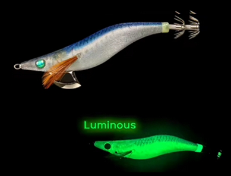

Egis Low Cost
Inicio
Señuelos
YAMASHITA
DTD
YO-ZURI
LETOYO
KINGDOM
SQUID KING
OTROS
Componentes
Color Egis
Acerca de
Letoyo Modelo F – Análisis completo

🎨 Características
Color base:
Dorso azul profundo con degradado hacia un vientre plateado/blanco perlado.
Patrón:
Escamas finas y textura realista, imitando fielmente a peces pequeños como sardinas o anchovetas.
Brillo:
Efecto luminiscente verde intenso, visible en todo el cuerpo .
Acabado:
Tela sedosa con reflejo metálico, que resalta bajo luz natural o artificial.
🌤️ Condiciones ideales de uso
☀️
Días soleados / aguas claras:
El azul se integra perfectamente con el entorno, ofreciendo un perfil muy natural.
☁️
Días nublados:
Mantiene buena visibilidad sin perder naturalidad.
🌊
Aguas azul/verde:
Equilibrio perfecto entre contraste y camuflaje.
🌅
Amanece / Atardece:
El contraste del azul con el plateado resulta muy atractivo para calamares en caza activa.
🌙
Noche:
La luminiscencia verde añade un efecto visible pero no excesivo, ideal para entornos con algo de claridad lunar o luz ambiental.
🪸
Fondos rocosos:
Su tono natural ayuda a camuflarlo parcialmente, evitando alertar a los calamares más cautelosos.
🧠 Comportamiento esperado
👉 Egi de realismo natural, diseñado para condiciones de alta visibilidad y calamares desconfiados.
👉 El tono azul con vientre claro imita perfectamente una presa viva en movimiento.
👉 El brillo verde añade versatilidad para pesca nocturna o con baja luz, sin romper su perfil natural.
👉 Muy eficaz cuando los calamares siguen los señuelos pero no atacan colores intensos.
⚙️ Resumen práctico
Condición
Eficiencia
☀️🌊 Día soleado / agua clara
🟢🟢 Muy alta
☁️💙 Día nublado / aguas azules
🟢 Alta
🌙🌑 Noche / aguas oscuras
🟢 Alta
🦑😴 Calamares pasivos
🟢🟢 Muy alta
🦑🔥 Calamares agresivos
🟡 Media
🛒 Comprar opción 1
🛒 Comprar opción 2
🛒 Range Hunter
🛒 Neon Bright
🛒 Egi OH Live Neon